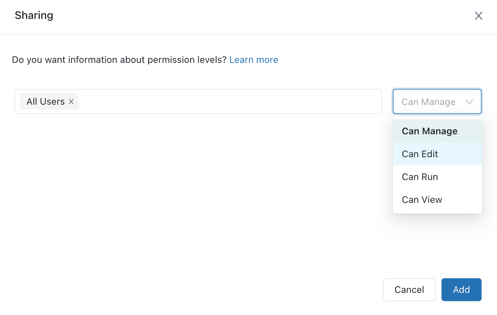
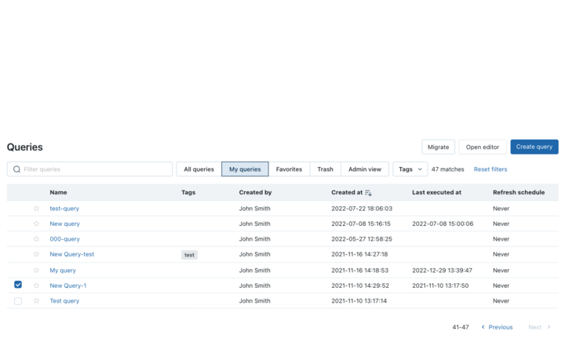
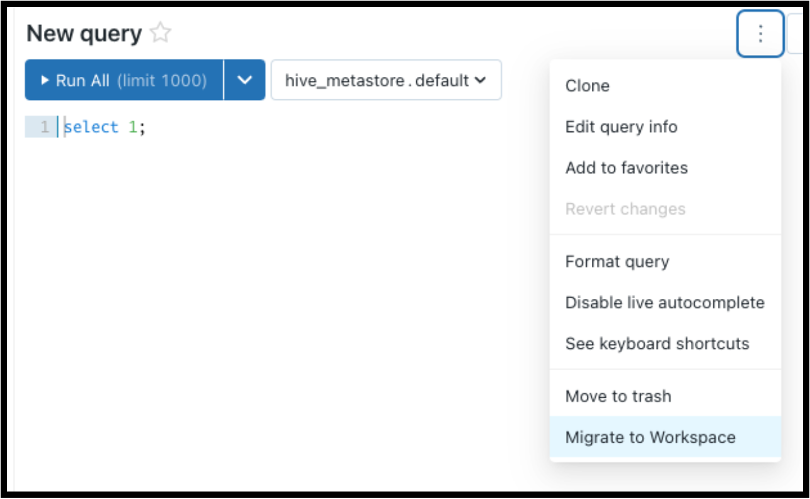
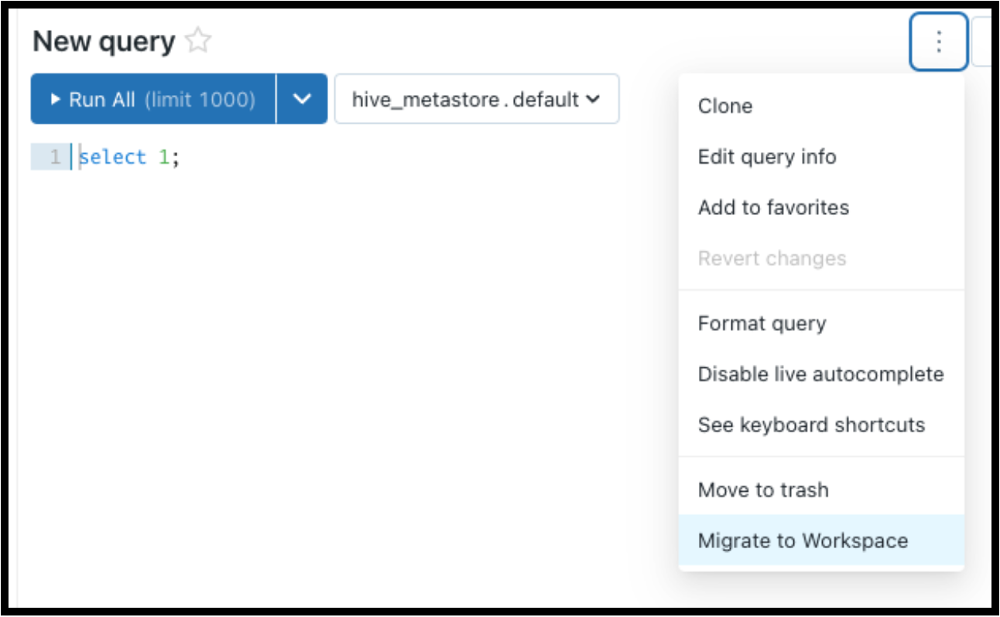

Workspace browser
With the workspace browser you can create, browse, and organize Databricks objects, including notebooks, libraries, experiments, queries, dashboards, and alerts, in a single place. You can then share objects and assign permissions at the folder level to organize objects by team or project. You can also browse content in Databricks Repos. The workspace browser introduces a contextual browser that allows you to browse content, including content in Repos, from within a notebook.
Note
Queries, dashboards, and alerts created before September 7, 2022 must be migrated to the workspace browser. See Migrate queries, dashboards, and alerts.
Important
Starting on July 10, 2023, Databricks will force-migrate all Databricks SQL content (dashboards, queries, alerts) to the workspace browser. Visit My Queries, My Alerts, and My dashboards and look for any un-migrated queries, alerts, or dashboards, which will have a checkbox on the lefthand side. When a box is checked, a Migrate button will appear that allows you to migrate multiple assets at a time. If no action is taken, your Databricks SQL content (dashboards, queries, alerts) will be moved to your user folder. Workspace admins should ensure that all objects without a valid active owner are updated to have one. Starting on September 10, 2023, we will delete all unmigrated objects without a valid owner.
Note
If you haven’t enabled the new UI, you must opt in to the full-page workspace browser described in this article. If you’ve enabled the new UI, the full-page workspace browser is enabled by default.
Opt in to the full-page workspace browser
If you’ve enabled the new UI, you can skip this step. If you haven’t enabled the new UI, do the following to opt in to the full-page workspace browser:
In the sidebar, click Workspace.
Click Try the new Workspace Browser, and then click Opt-in.
You can also opt in or out of the full-page workspace browser by doing the following:
Click your username at the top right of the workspace, and then click User Settings in the dropdown list.
Click the Editor settings tab.
Click the New Workspace Browser experience setting to turn it on or off.
View objects in the workspace browser
You can view objects, including content in Repos, in the workspace browser by clicking Workspace in the sidebar. Objects created outside the workspace browser (for example, from the query list page) are viewable, by default, in the Home folder, where you can organize them within subfolders if you want.
Work with folders and folder objects
The workspace enables you to create folders, move objects between folders, and share objects to groups of users with a choice of permission levels.
To create a folder, click Add and then select Folder.
To move objects between folders, select the object you want to move and then drag it to the folder where you want to move it.
To share and grant permissions to all objects in a folder, right-click the folder and select Share. Enter the users, groups or service principals to which you want to share the folder and its objects, and then select the permission level. Click Add.

Migrate queries, dashboards, and alerts
Queries, dashboards, and alerts created before September 7, 2022 are not visible in the Databricks SQL workspace browser until they are migrated to the Databricks SQL workspace browser. To view and organize these queries, dashboards, and alerts, do one of the following:
Use the query, dashboard, or alert list page to migrate objects you own. To view objects that you can migrate, click My queries, My dashboards, or My alerts on the appropriate list page and then click Migrate. Workspace admins can change ownership of an object to themselves if they would like to perform the migration.
Open the query, dashboard, or alert object itself and then click the
 next to the object. In the displayed list, select Migrate to Workspace.
next to the object. In the displayed list, select Migrate to Workspace.
After you click Migrate, you can select an existing folder into which to migrate the object or you can simply migrate it to the Home folder. In addition to the permissions that are already on the object, the migrated object inherits permission on the folder into which it’s being organized. Additionally, moving an object to a folder where another object with the same name already exists automatically updates the newly moved object’s name with the suffix “ (1)”.
Objects like dashboards, alerts, and query-based dropdown lists are referenceable regardless of whether the objects are new, existing, migrated, or unmigrated.